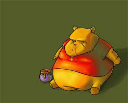

T
est-Site
Main page
Ukrainian news
Instagram
Facebook

Illia Boiko
Hello, it's my test site. Here I
leaved my social network(facebook and instagram).
Also I leaved Ukrainian news, you can find
this on page 'Ukraine news' or you can
find information about Ukraine on
'Main page'